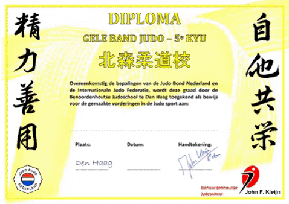

Tweemaal per jaar organiseren wij examens, in januari en in juni. Op een
examen laat je zien welke technieken en oefeningen je allemaal geleerd
hebt.

Dat doe je samen met iemand waarmee je goed kunt judoën, die dus
ongeveer even groot, even lang etc. is.
Een examinator
beoordeelt je examen en beloont je eventueel met een volgende band of
slip. De uitslag van het examen is afhankelijk van de gevorderdheid maar
ook van de leeftijd.
Jongere judoka's maken maximaal 1
stapje per examen, bv. van 1 naar 2. Oudere judoka's kunnen stappen
overslaan, bv. van 2 naar 4.
De gevorderdheid bepaalt of dit
maximale aantal stapjes ook daadwerkelijk gemaakt wordt. Ongeacht de
leeftijd, de huidige band en slip en de gevorderdheid is het maximale
resultaat altijd de volgende hele band. Hieronder zie je de volgorde van
alle banden en slippen.